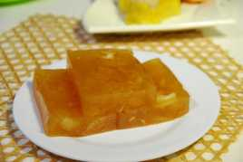

肠粉：广州的肠粉呈现透明状，口感比较Q弹，一般酱料是酱油及其他酱制成，口感较甜，配菜多为生菜。潮州的肠粉呈现白色，口感香糯，酱料多为耗油花生酱，配菜各式各样。
马蹄糕：马蹄糕是广东省广州市和福建省福州市广西壮族自治区南宁市的传统甜点小吃。相传源于唐代，以糖水拌合荸荠粉或者地瓜粉蒸制而成。荸荠，粤语和闽语别称马蹄，故名。其色茶黄，呈半透明，可折而不裂，撅而不断，软、滑、爽、韧兼备，味极香甜。
老火靓汤：汤料可以是肉、蛋、海鲜、蔬菜、干果、粮食、药材等;煲汤的方法可以是千奇百异，熬、滚、煲、烩、炖等;不同的汤由于不同的材料会有咸、甜、酸、辣等不同的味道。